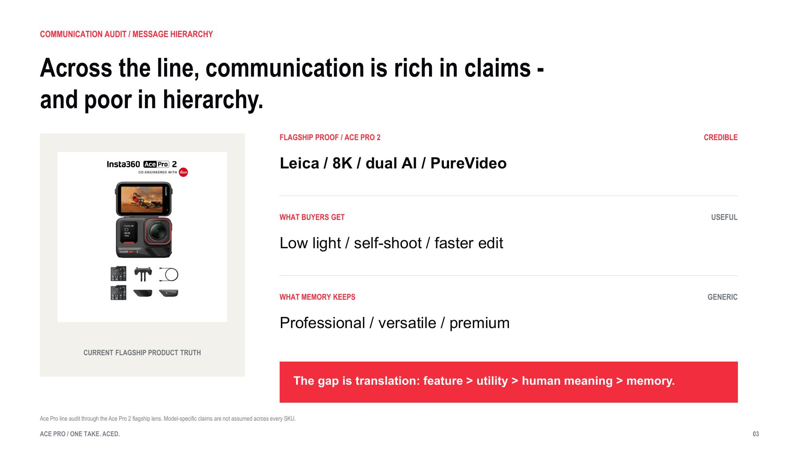
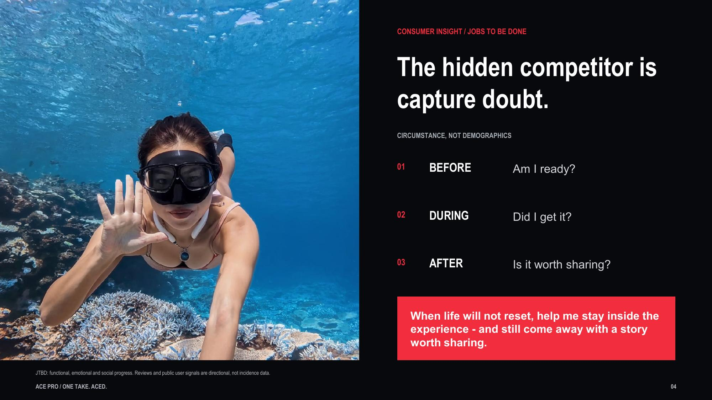
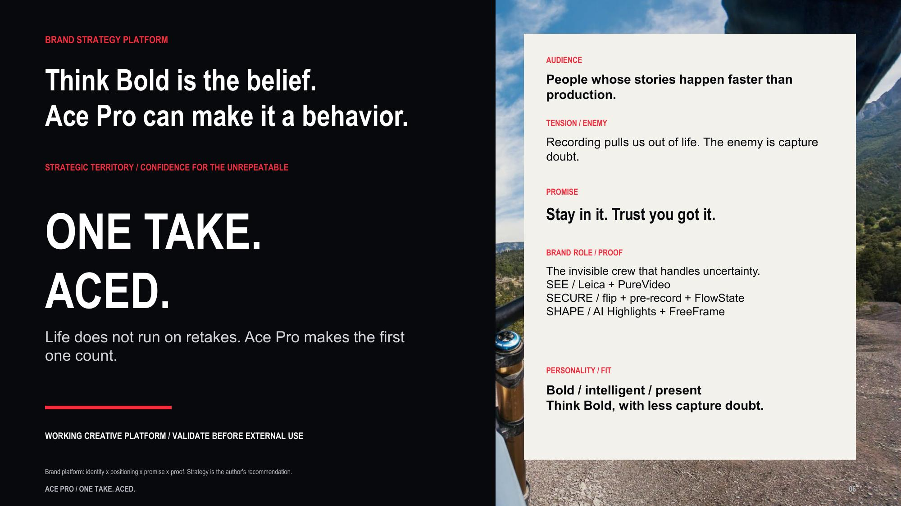
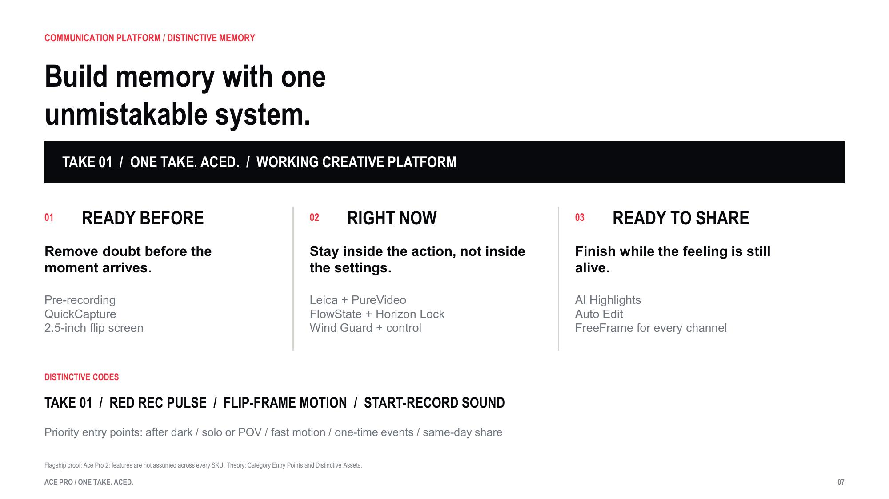
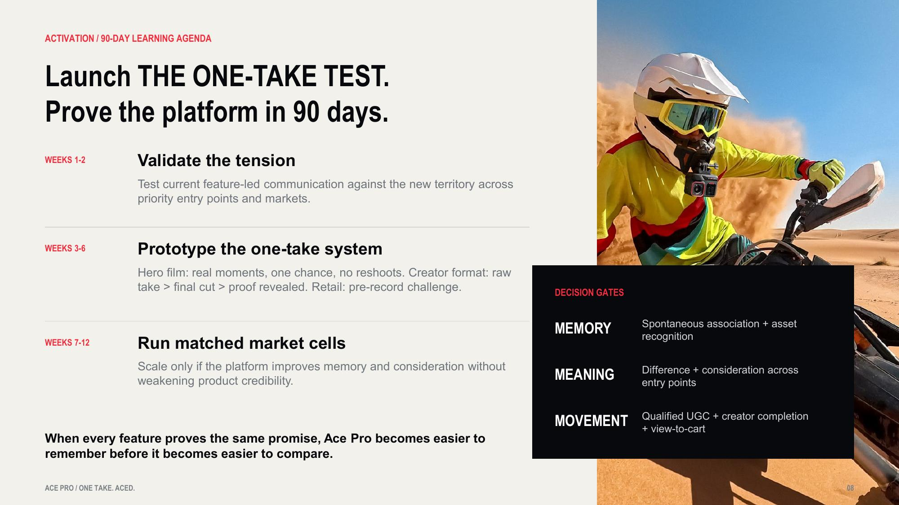

Selected Work
03 / Global Brand Strategy
Insta360 Ace Pro Product Line
From product proof to a memorable brand platform
一份英文品牌策略作业：从传播审计出发，将分散的产品证据收束为可记忆、可验证的品牌平台。
View Full Strategy Deck
01 / Context
从传播诊断，找到一个核心品牌机会。
题目要求评估 Ace Pro 产品线传播的优势与缺口，并提出能够强化 positioning 与 communication 的关键机会。Ace Pro 2 作为旗舰证据，但不把单一机型能力泛化到整条产品线。
02 / Communication Audit
Product proof is strong. Brand memory remains fragmented.
Leica、8K、AI 双芯、PureVideo 和翻转屏构成强产品证据，但产品容易被比较，不一定容易被记住。
- 01Product Proof
- 02User Utility
- 03Human Meaning
- 04Brand Memory

03 / Consumer Insight
The hidden competitor is capture doubt.
Signal / CapabilityUser NeedScenarioValue
BeforeAm I ready?时刻到来之前准备的信心
DuringDid I get it?动作正在发生拍到的信心
AfterIs it worth sharing?回看与发布分享的信心

04 / Brand Platform
Confidence for the unrepeatable.
机会不是继续增加一条功能信息，而是让不同产品证据共同服务于一种人类价值：面对无法重来的时刻，用户可以留在体验里，也相信自己已经拍到。
ONE TAKE. ACED. — Life does not run on retakes. Ace Pro makes the first one count.

05 / Communication System
让记忆沿着同一套系统积累。
Ready Before
- Remove doubt before the moment arrives
Right Now
- Stay inside the action, not inside the settings
Ready to Share
- Finish while the feeling is still alive

06 / 90-day Learning Agenda
策略先接受验证，再决定扩大投入。
Decision gates 使用 Memory、Meaning 与 Movement，而不是在没有执行的情况下承诺曝光、转化或销量。
- 01Validate the Tension
- 02Prototype the System
- 03Run Matched Market Cells

07 / Deliverables
完整英文策略交付，而非商业结果。
- 8-page English strategy deck
- Interactive web version
- Communication audit
- Positioning territory
- Message system
- Validation agenda